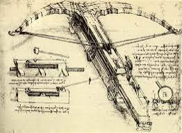

"Hay tres clases de personas: aquellas que ven, aquellas que ven lo que se les muestra y aquellas que no ven".
Medía alrededor de 25 metros de largo. Tenía seis ruedas para desplazarse, tres en cada lado. El arco estaba hecho de madera fina para que fuera flexible. Su propósito era intimidar a los enemigos.
La idea original de Da Vinci, como se describe en los dibujos, era construir una ballesta gigante para aumentar el alcance del dardo. Se usaba para disparar bombas y piedras, y se utilizaba principalmente para intimidar
El diseño de la ballesta gigante está vinculado a Ludovico Sforza, un príncipe italiano del Renacimiento, que deseaba expandir y desarrollar tanto su ejército como la región de Milán.
Aunque no existe una fecha exacta para el dibujo de la ballesta gigante, se cree que se completó entre 1483 y principios de la década de 1490.
Mucho antes del diseño de Leonardo da Vinci, la ballesta ya existía. Sin embargo, su diseño hizo que el arma fuera más avanzada, por eso la ballesta gigante se destaca como importante.
Las matemáticas que utilizó para diseñar su invención de la ballesta gigante eran muy avanzadas a pesar de las inexactitudes actualmente conocidas con el conocimiento actual del diseño y la geometría.